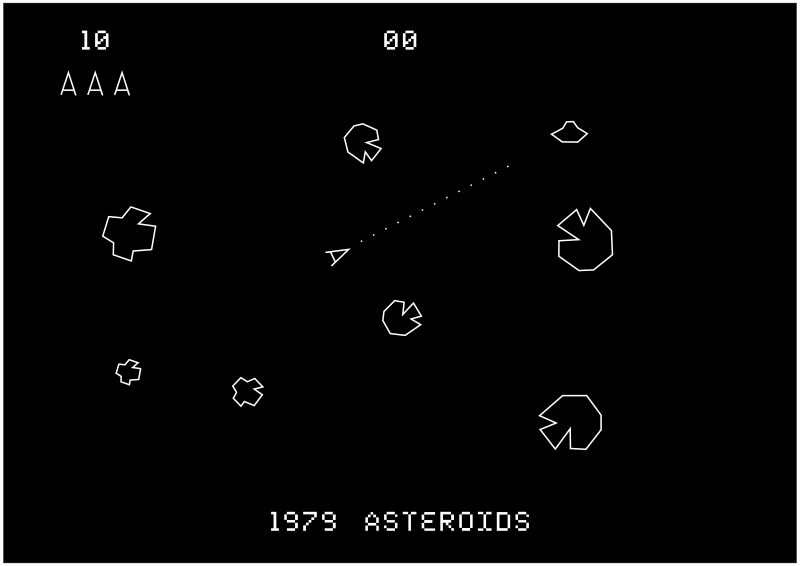
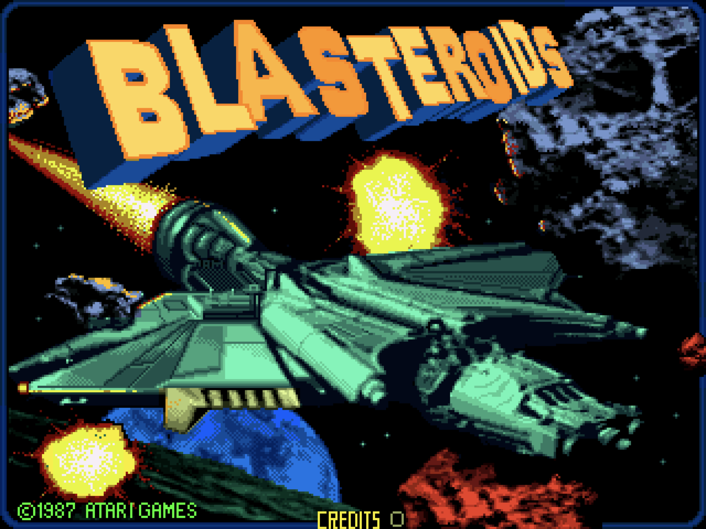
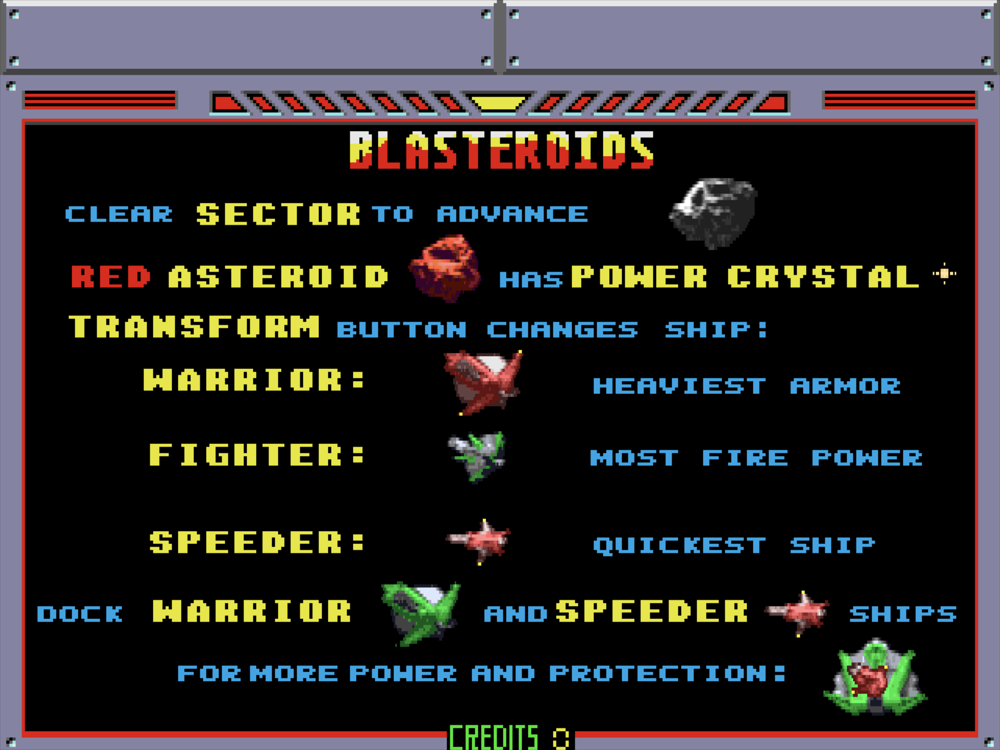
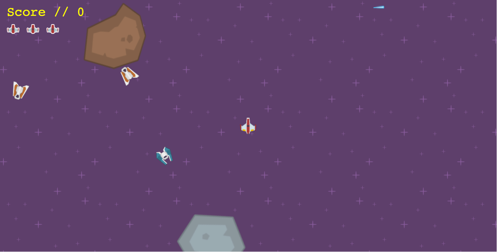

Blasteroids
Blasteroids
About Blasteroids




Blasteroids Game Play
Blasteroids Objective


Blasteroids is a Blasteroids clone built purely using HTML, CSS, and JavaScript. Blasteroids was designed as an entry level introduction into both Web Programming and Game Programming. Its source code, its comments and its documentation are FREE to everyone.


Our Objective
Blasteroids are...
- ...to avoid blasteroids at all costs,
- ...to avoid enemy ships at all costs,
- ...to destroy as many blasteroids as possible,
- ...to destroy enemy ships (only if they shoot first),
- ...to reach the highest level possible,
- ...and to earn the highest score.
The player must do all of this while traversing levels of increasingly difficulty.
The player pilots a state of the art, computer generated, very pixelated ship that comes with zero guarantees. It does however come with an infinite supply of laser blasts. The ship can also...
- ...rotate left,
- ...rotate right,
- ...fire shots straight forward,
- ...and thrust forward.
Underpinnings
Blasteroids is built using the following libraries:
- Box2dWeb - a JavaScript physics engine
- boxbox - a wrapper framework for the Box2d / Box2dweb physics engine
- jQuery - a fast, small, and feature-rich JavaScript library
- Animate.css - a cross-browser library of CSS animations
plus, its own custom libraries:
and some utility methods in:
Legal Stuff
Blasteroids is a clone of Ed Rotberg's Blasteroids of 1987.
Blasteroids is designed as an entry level introduction into both Web Programming and Game Programming. Its source code and documentation are FREE to everyone, forever, in perpetuity, until the end of the universe.
Blasteroids is distributed under a short and simple permissive license with conditions only requiring preservation of copyright and license notices. Licensed works, modifications, and larger works may be distributed under different terms and without source code. Blasteroids is free software, licensed under the MIT License(the "License"). Commercial and non-commercial use are permitted in compliance with the License.
Contributing
Blasteroids? Please read How to Contribute.Installation and Usage
Prerequisites
Running
Blasteroids comes ready to run, out of the box, no building required.
To rebuild the documentation, in case you have made changes, and start the server, run
npm run serve
npm run serve-macosx
Richards-MacBook-Pro:blasteroids rfranks$ npm run serve
> blasteroids@0.0.1 serve /Users/rfranks/Developer/Code/blasteroids
> npm install && ./build-doc.sh && ./node_modules/.bin/http-server
audited 100 packages in 1.101s
found 0 vulnerabilities
Removing Documentation Directory[./doc]...
Building Documentation using jsDoc...
Parsing /Users/rfranks/Developer/Code/blasteroids/js/conf/options.config.js ...
Parsing /Users/rfranks/Developer/Code/blasteroids/js/conf/powerups.config.js ...
Parsing /Users/rfranks/Developer/Code/blasteroids/js/game/entities.js ...
Parsing /Users/rfranks/Developer/Code/blasteroids/js/game/game.js ...
Parsing /Users/rfranks/Developer/Code/blasteroids/js/lib/audio.js ...
Parsing /Users/rfranks/Developer/Code/blasteroids/js/lib/boxbox-util.js ...
Parsing /Users/rfranks/Developer/Code/blasteroids/js/lib/log4.js ...
Parsing /Users/rfranks/Developer/Code/blasteroids/js/lunr.search.js ...
Parsing /Users/rfranks/Developer/Code/blasteroids/js/public-lib/boxbox.doc.js ...
Parsing /Users/rfranks/Developer/Code/blasteroids/js/public-lib/docstrap.min.js ...
Parsing /Users/rfranks/Developer/Code/blasteroids/js/public-lib/lunr.min.js ...
Parsing /Users/rfranks/Developer/Code/blasteroids/js/sunlight.js ...
Parsing /Users/rfranks/Developer/Code/blasteroids/js/toc.js ...
Generating output files...
Finished running in 1.84 seconds.
...Done!
Starting up http-server, serving ./
Available on:
http://127.0.0.1:8080
http://10.0.0.182:8080
Hit CTRL-C to stop the server
CTRL-C to stop the server when you have finished running Blasteroids.Project Structure
| Approx Size | Folder | File Type | Contents |
|---|---|---|---|
| 220K | ./blasteroids/css/doc |
css | css stylesheets specific to the game's documentation |
| 320K | ./blasteroids/css |
css | core css stylesheets |
| 44K | ./blasteroids/images/background |
image/png | background images for the game's canvas |
| 756K | ./blasteroids/images/doc |
image/png | images used in the game's documentation |
| 1.5M | ./blasteroids/images |
image/png | images used in the game or the game's documentation |
| 800K | ./blasteroids/js/public-lib |
js | 3rd party JavaScript libraries used by the game or the game's documentation (like jQuery, DocStrap or boxbox) |
| 68K | ./blasteroids/js/game |
js | javascript files used in the game (like the entities within the game) |
| 48K | ./blasteroids/js/lib |
js | core utility libraries used by the game or the game's documentation |
| 20K | ./blasteroids/js/conf |
js | configuration js files |
| 992K | ./blasteroids/js |
js | javascript files used in the game or the game's documentation |
| 3.0M | ./blasteroids/sounds |
wav | sounds used within the game |
| 8.0K | ./blasteroids/static |
- | just that, noise... can we remove? required by jsdoc? |
| 100K | ./blasteroids/templates |
tmpl | template files for the documentation ui (used during the JSDoc publish action) |
| 32K | ./blasteroids/tutorials |
markdown | markdown documents that correspond to the tutorials in the game's documentation, such as How To Play, or even the Code of Conduct |
| 220K | ./blasteroids/fonts |
eot/svg/ttf/woff/woff2 | fonts used by the game or the game's documentation |
| 6.2M (total) | ./blasteroids |
* | all of the games files |
How to Play
Blasteroids, see How to Play.Development and design
Blasteroids is in no way related to or derived from Ed Rotberg's 1987's Blasteroids.Blasteroids was designed as an entry level introduction into both Web Programming and Game Programming. Both its source code and documentation are FREE to everyone.Reception
Attributions
Blasteroids uses the great sounds provided free of charge from NoiseForFun.com. Please visit and donate! :-)Blasteroids also uses the Space Shooter Redux assets library from Kenney.nl. Please visit and donate! :-)For More Information
- TODO.
- TODO.
- Post questions tagged
blasteroidsto Stack
Overflow.
License
Blasteroids is free software, licensed under the MIT License(the "License"). Commercial and non-commercial use are permitted in compliance with the License.The source code for Blasteroids is available at GitHub.
Blasteroids is distributed under a short and simple permissive license with conditions only requiring preservation of copyright and license notices. Licensed works, modifications, and larger works may be distributed under different terms and without source code.
| Permissions | Conditions | Limitations |
|---|---|---|
| Commercial use | License and copyright notice | Liability |
| Distribution | Warranty | |
| Modification | ||
| Private use |
MIT License
Copyright (c) 2017-present Richard Franks Jr richardfranksjr@hotmail.com
Permission is hereby granted, free of charge, to any person obtaining a copy of this software and associated documentation files (the "Software"), to deal in the Software without restriction, including without limitation the rights to use, copy, modify, merge, publish, distribute, sublicense, and/or sell copies of the Software, and to permit persons to whom the Software is furnished to do so, subject to the following conditions:
The above copyright notice and this permission notice shall be included in all copies or substantial portions of the Software.
THE SOFTWARE IS PROVIDED "AS IS", WITHOUT WARRANTY OF ANY KIND, EXPRESS OR IMPLIED, INCLUDING BUT NOT LIMITED TO THE WARRANTIES OF MERCHANTABILITY, FITNESS FOR A PARTICULAR PURPOSE AND NONINFRINGEMENT. IN NO EVENT SHALL THE AUTHORS OR COPYRIGHT HOLDERS BE LIABLE FOR ANY CLAIM, DAMAGES OR OTHER LIABILITY, WHETHER IN AN ACTION OF CONTRACT, TORT OR OTHERWISE, ARISING FROM, OUT OF OR IN CONNECTION WITH THE SOFTWARE OR THE USE OR OTHER DEALINGS IN THE SOFTWARE.